Fill Indian Ocean
In this tutorial, we’ll walk through the process of modifying the continental geometry in an uncoupled CESM case, where we’ll fill the Indian Ocean with land and these new land points will be specified as c4-grass.
Stage 0: Open visualCaseGen
Follow the instructions in the Opening the GUI to open visualCaseGen in your Jupyter notebook environment.
Stage 1: Select Compset
After having executed the cell with the command from visualCaseGen import gui; gui, and clicking the Start button, you will see the main interface of visualCaseGen.
Click the Custom button to proceed with creating a custom compset.

Initialization time
Select 2000 as the initialization time period. This selection is appropriate for fixed-time-period runs with present-day conditions.
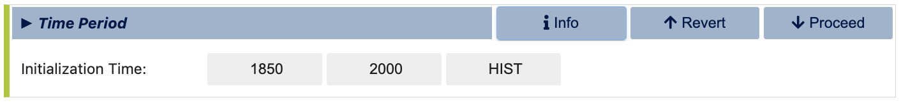Models
Once you’ve selected the initialization time, visualCaseGen will prompt you to select the models for each component class. For this ridge world case, select the following component options: cam as the atmosphere model, clm as the land model, cice as the ice model, docn (data ocean) as the ocean model, rtm as the river transport model, sglc (stub land ice) as the land ice model, and swav (stub wave) as the wave model. After all the selections are made, the model matrix should look like:
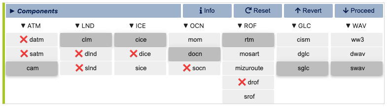Model Physics
Having selected the models, you will proceed to select the physics options for each model. The physics settings determine the complexity of each model component and impact computational requirements. For this example, select the CAM60 physics option for the atmosphere model and CLM50 as the land physics. For the remaining models, there are no multiple physics options available, so the default physics settings are automatically selected.
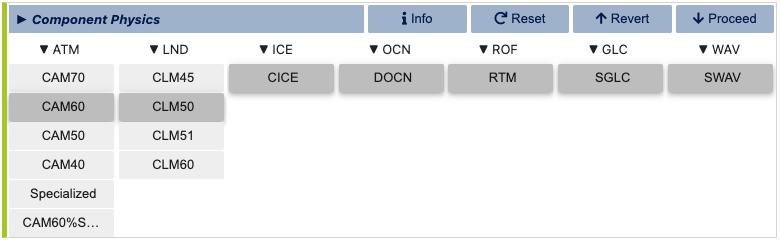Component Options (Modifiers)
You are now ready to finalize the compset by selecting optional physics modifiers. Navigate between tabs for each component options to select the desired options. For this example, make the following selections:
ATM: (none)
LND: SP (satellite phenology)
ICE: PRES (prescribed)
OCN: DOM (prescribed)
ROF: (none)
WAV: (none)
RTM: (none)
Stage 2: Grid
Having completed the compset configuration, you will now proceed to the Grid stage. To be able to fill the Indian Ocean with land, you will need to create a custom grid, so click the Custom button to proceed.

When the Custom button is clicked, you will be prompted to specify a directory where the grid files will be stored and a new, unique grid name, .e.g., fillIndian for this example.
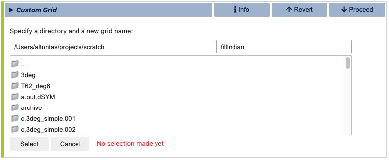Atmosphere Grid
After selecting your grid directory and assigning a name, click the “Select” button to initiate the process of constructing your new grid. You will do this by individually selecting the grids for the atmosphere, ocean, and land. First, you will be prompted to select the atmosphere grid. Note that, unlike the ocean and land grids, the atmosphere grid is not customizable within visualCaseGen. Therefore, you must select from the pre-existing options. For this example, choose the standard 1-degree resolution grid: “0.9x1.25.”
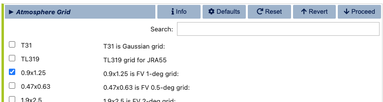Ocean Grid
Since DOCN (data ocean) is the ocean model selected for this compset, the ocean grid will be automatically set to the same grid as the atmosphere model. Therefore, you do not need to make any selections for the ocean grid. However, you will have the option to customize the land/ocean mask in the land grid section.
Land Grid
In the final step of the custom grid configuration, you will be prompted to select the land grid. Since the continental geometry is to be modified, select the Modified land grid mode:

In the Base Land Grid selection dialog, choose the 0.9x1.25 grid to be consistent with the atmosphere grid:
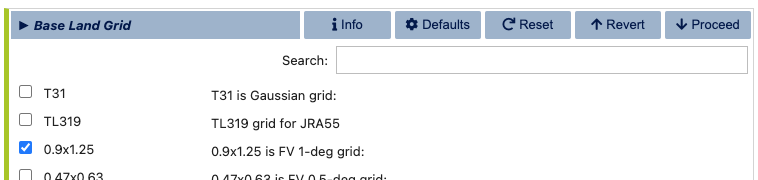Having selected the base land grid, you will now be prompted specify the land/ocean mask. This is done in the Mesh Mask Modifier subsection of the land grid configuration. When an active ocean model (i.e., MOM6) is present, the land/ocean mask is set by the ocean model grid. However, since the ocean model for this compset is DOCN, you will need to specify the land/ocean via the Mesh Mask Modifier dialog, which should initially look like:

The visualCaseGen tool auto-completes the (default) mesh file, if available. Otherwise, you can download the fv0.9x1.25 mesh file from the CESM input data repository: https://svn-ccsm-inputdata.cgd.ucar.edu/trunk/inputdata/share/meshes/fv0.9x1.25_141008_polemod_ESMFmesh.nc
After downloading the mesh file (if necessary), and providing the path to it (unless already auto-filled), you will need to specify the custom Land mask file path. This file is to be pre-generated by the user, and it should contain the following variables:
Variable name |
Description |
|---|---|
landmask(lsmlat,lsmlon) |
1’s for land, 0’s elsewhere |
mod_lnd_props(lsmlat,lsmlon) |
mask where the surface properties will be altered (1’s for modification, 0’s elsewhere) |
lats(lsmlat) |
grid latitudes |
lons(lsmlon) |
grid longitudes |
If the latitude and longitude variables are not the same as the names specified above, make sure to update the corresponding variable and dimension names in the Mesh Mask Modifier dialog.
For this example, we provide a custom land mask file named mask_fillIO.nc where the Indian Ocean
is filled with land.
Download the following tar file containing this custom land mask file and the Jupyter notebook
that was used to generate it, along with the original land mask file:
modifylandmask_scripts.tar
After downloading the tar file, you may extract the contents as follows:
tar -xf modifylandmask_scripts.tar
If successfully extracted, you will find the following files under the modifylandmask_scripts directory:
mask_fillIO.nc: The custom land mask file with the Indian Ocean filled with land.
default_mask.nc: The original land mask file.
modifylandmask.ipynb: The Jupyter notebook used to generate the custom land mask file.
Set the Land mask file path to the mask_fillIO.nc under the modifylandmask_scripts directory.
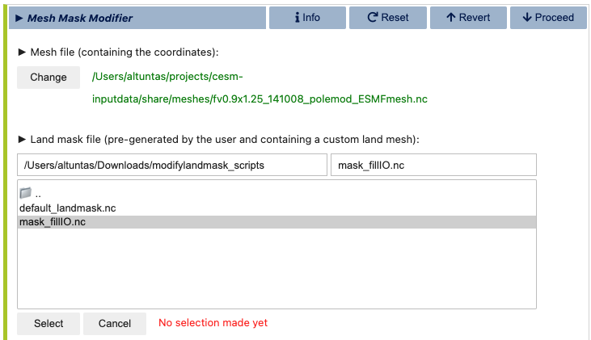This custom land mask is shown in the below figure where the first image shows the original land mask, the second image shows the custom land mask with the Indian Ocean filled with land, and the third image shows the difference between the two masks:
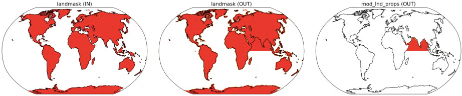Once the modified land mask file path is specified and the variables are correctly set, click the “Run mesh mask modifier” button to apply the custom land mask to the mesh file. This may take a few minutes to complete. Once the process is finished, you will automatically proceed to the second and final step of the custom land grid configuration: fsurdat file generation.
In the fsurdat file generation dialog, you will be prompted to configure and run the fsurdat tool to modify the surface data of the selected land grid. The properties to configure and modify include soil properties, vegetation properties, urban areas, etc. (See CLM documentation for more information.) visualCaseGen will automatically select the input surface data file (fsurdat) if it exists in the CESM input data directory of the system you are using. Otherwise, you can download the following fsurdat file from the CESM input data repository: https://svn-ccsm-inputdata.cgd.ucar.edu/trunk/inputdata/lnd/clm2/surfdata_esmf/ctsm5.3.0/surfdata_0.9x1.25_hist_1850_78pfts_c240908.nc
If the “Input surface data file (fsurdat)” is not already auto-filled, download the above file and provide the path to it in the “Input surface data file (fsurdat)” field.
Next, make sure that “Via mask file” is chosen as the “Specify area of customization” option. If not already auto-filled, select the path to the mask_fillIO.nc file you provided in the previous step as the “Land mask file designating area of customization”.
Fill in the remaining fields as shown below:

Now, click the green Run fsurdat_modifier button to generate the modified fsurdat file. This process may take a few minutes to complete. Once the process is finished, you will automatically proceed to the Launch stage.
Stage 3: Launch
The final stage of visualCaseGen is the Launch stage, where you bring your CESM case to life with the selected compset and grid configuration. In this stage, you’ll find tools to select the case directory, choose a target machine, and initiate case creation.
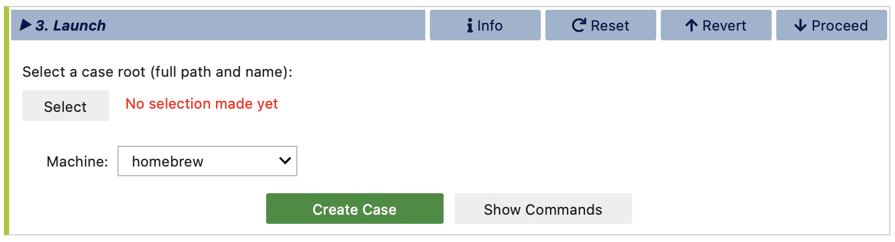First, click Select to choose the case directory and enter a unique casename, then click Select again to confirm.
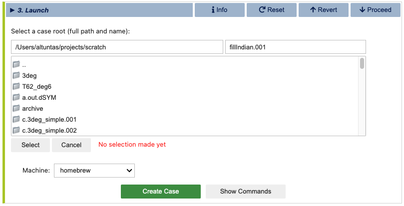Then confirm the target machine or select a different machine if needed. If the machine requires a project ID, you will be prompted to enter it here. At this point, you are ready to create the case. Before doing so, you can click Show Commands to view the terminal commands that will be executed.
Important
If CESM is not installed on your system, the selected machine will appear as CESM_NOT_PORTED and the Create Case button will be disabled. In this case, you can still print out the commands that would be executed to create the case by clicking the Show Commands button. You can then follow the printed commands and instructions on a system where CESM is installed to create the case manually.
Once ready to proceed, click Create Case to initiate case creation. If the case creation is successful, you will see a completion log detailing all the steps taken to create the case and a confirmation of the successful case creation along with the path to the new case directory:
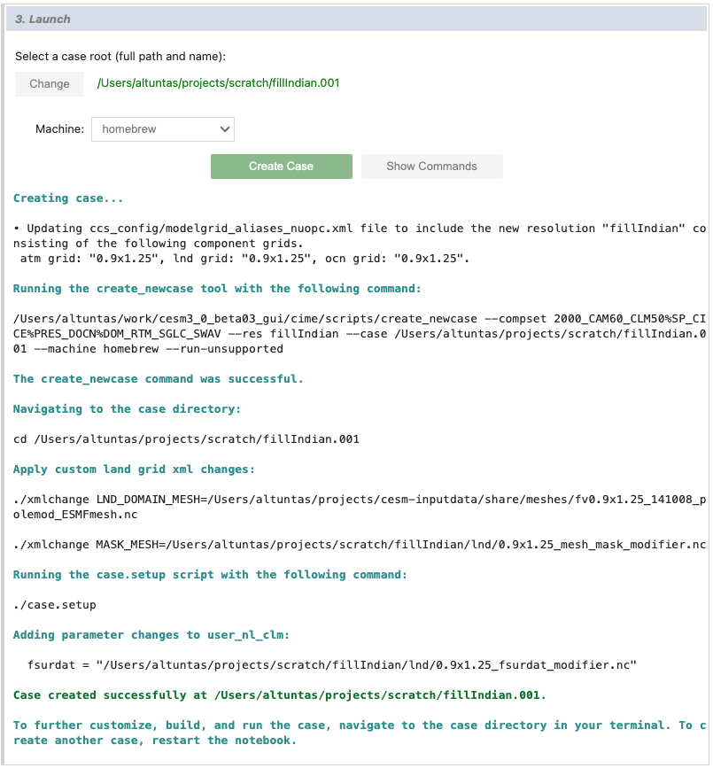